Пять рабочих экранов с настоящими API. До: текущее приложение на 8080. После: изолированная ветка, подготовленное доверенное демо и фактические прогоны; это не live LLM. Маскот не интегрирован. Нажмите на изображение, чтобы открыть оригинал.
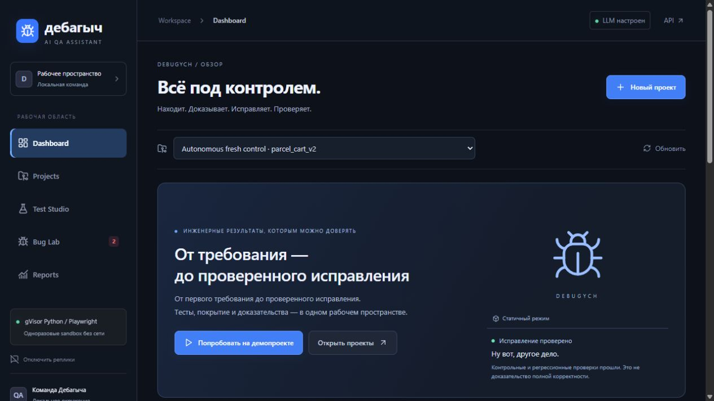
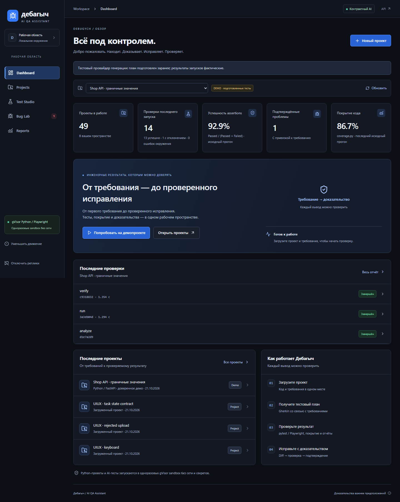
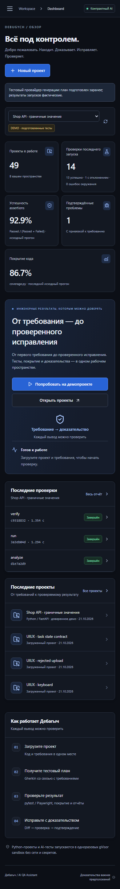
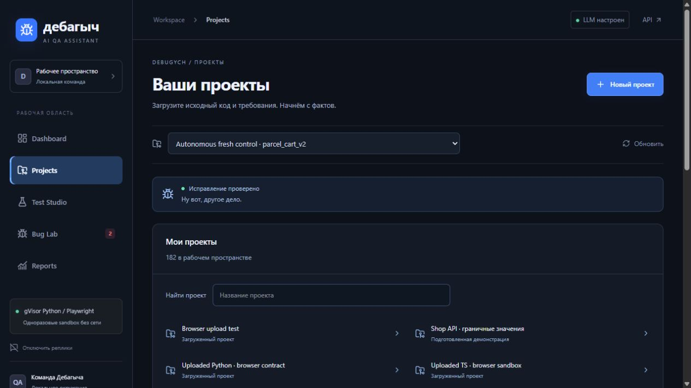
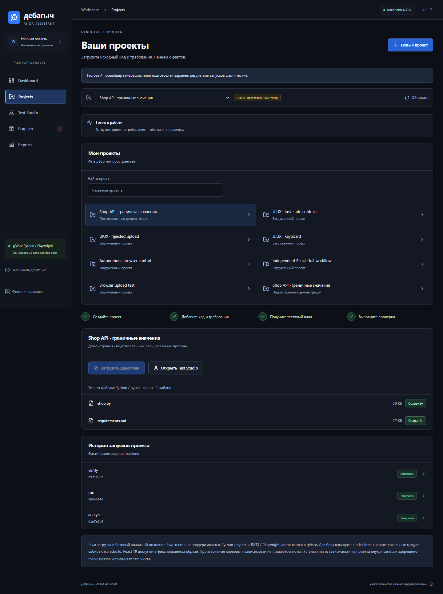
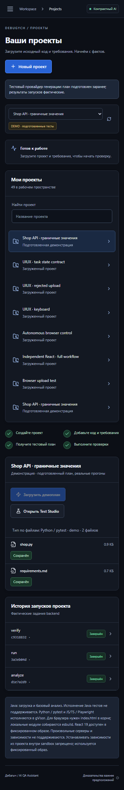
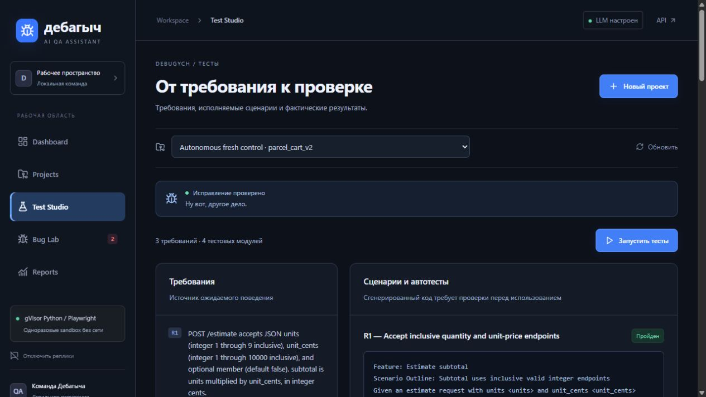
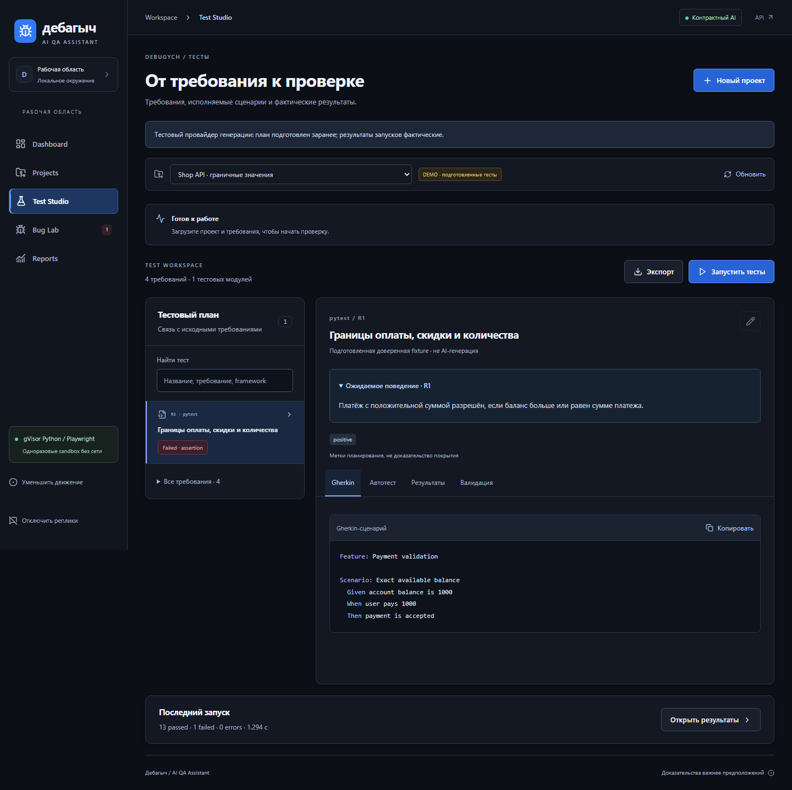
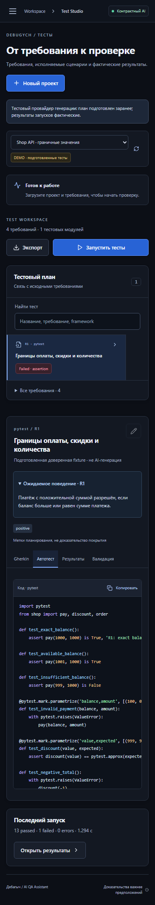
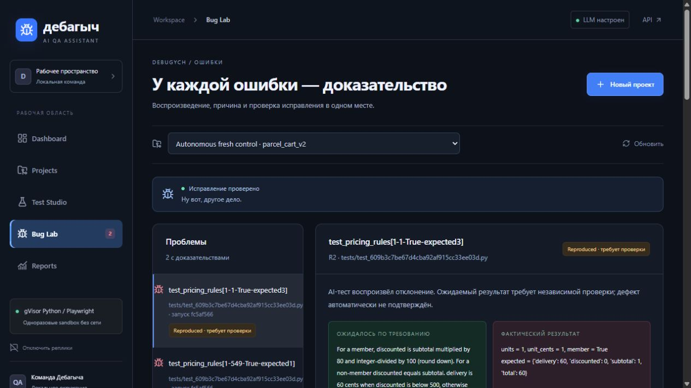
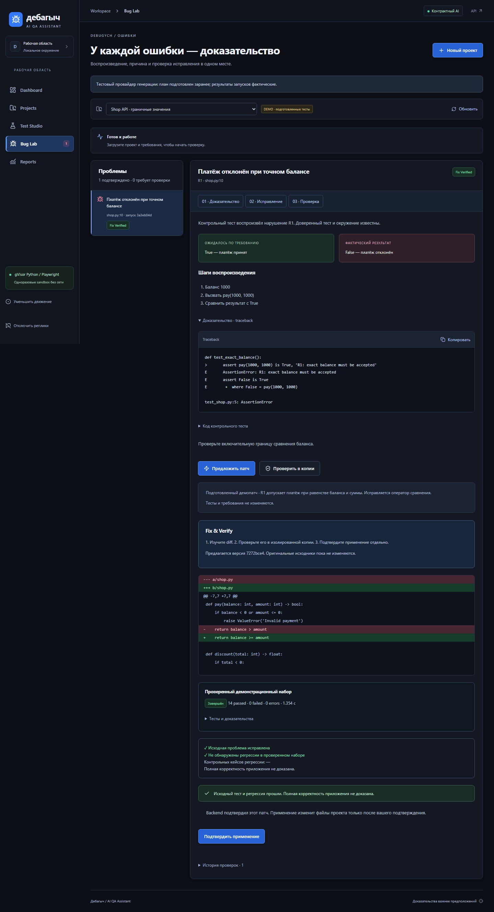
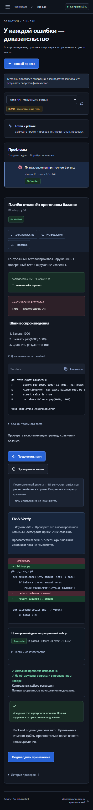
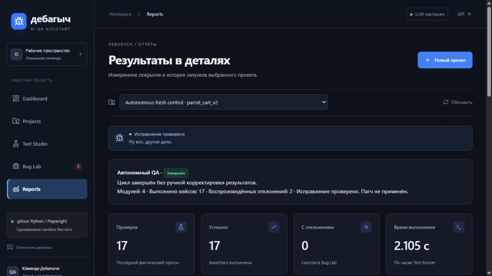
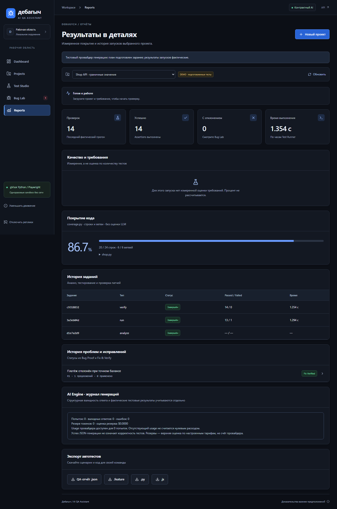
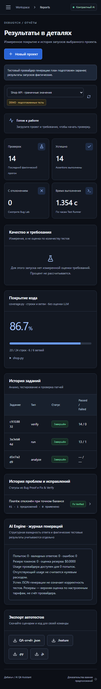